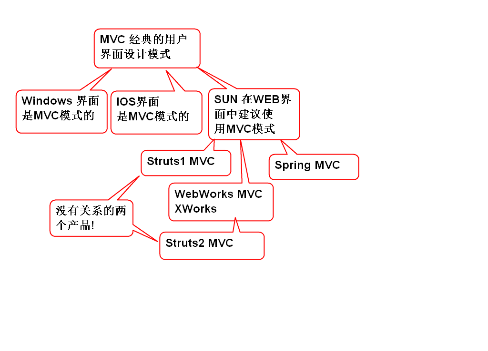
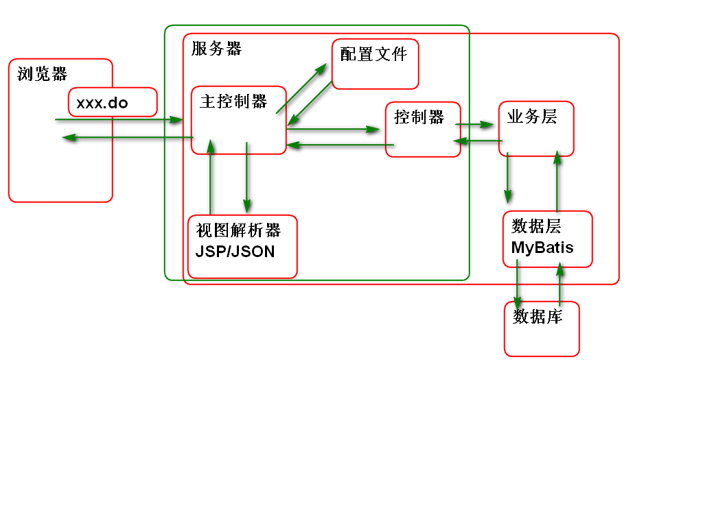
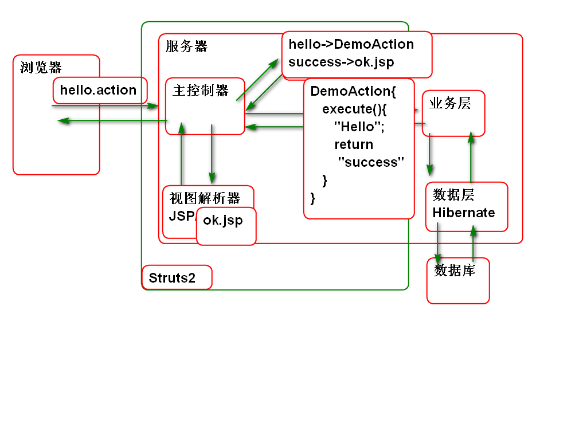
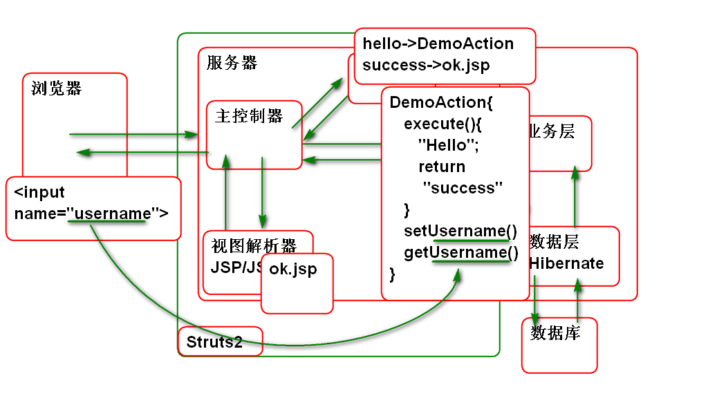
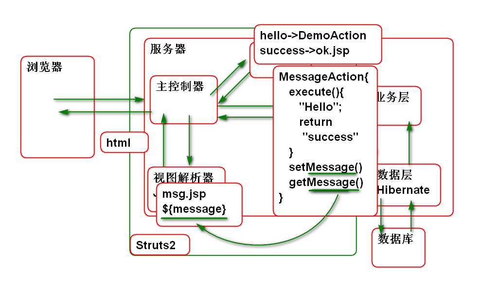
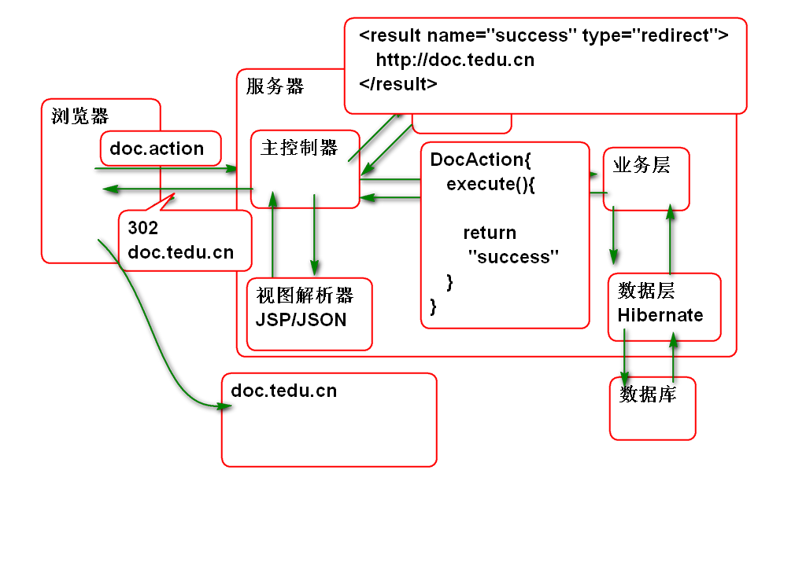
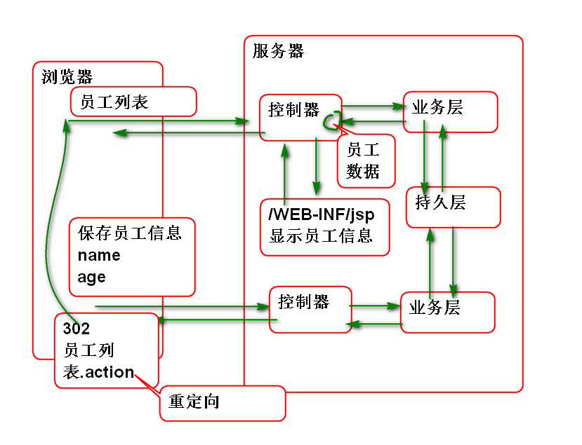
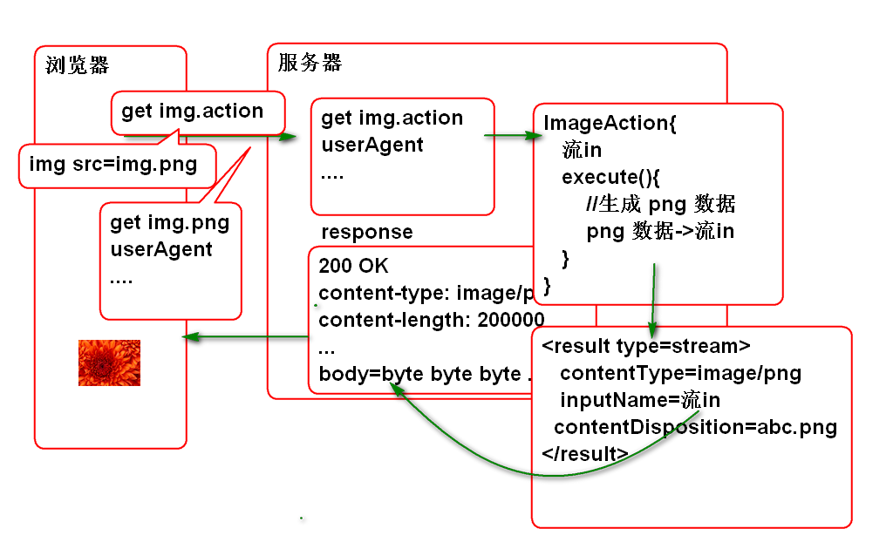

SSH 组合为:
Spring
Struts2
Hibernate
SSM组合为:
Spring
Spring MVC
MyBatis
框架是什么? 封装了软件中经常使用的技术代码, 这样写项目时候就可以重用这些代码, 程序员就可以只关注软件的业务功能,不用关心繁琐的技术问题.
MVC 是一种设计模式:

Struts2 源自 XWorks(Web Works) 与 Struts1 没有关系.
SSH结构为:

搭建步骤:
创建Maven项目, 导入Struts2 包:
<dependency>
<groupId>org.apache.struts</groupId>
<artifactId>struts2-core</artifactId>
<version>2.5.12</version>
</dependency>
需要生成部署描述文件 和 配置目标服务器运行环境.
配置主控制器:
<filter>
<display-name>StrutsPrepareAndExecuteFilter</display-name>
<filter-name>StrutsPrepareAndExecuteFilter</filter-name>
<filter-class>org.apache.struts2.dispatcher.filter.StrutsPrepareAndExecuteFilter</filter-class>
</filter>
<filter-mapping>
<filter-name>StrutsPrepareAndExecuteFilter</filter-name>
<url-pattern>/*</url-pattern>
</filter-mapping>
添加Struts配置文件 struts.xml:
<?xml version="1.0" encoding="UTF-8"?>
<!DOCTYPE struts PUBLIC
"-//Apache Software Foundation//DTD Struts Configuration 2.5//EN"
"http://struts.apache.org/dtds/struts-2.5.dtd">
<struts>
</struts>
DTD 信息来自 struts-2.5.dtd
部署测试.
原理:

步骤:
编写控制器类:
/**
* 控制器类
*/
public class DemoAction {
/**
* 控制器 中的流程控制方法
* 在用户请求URL时候执行
*/
public String execute(){
System.out.println("Hello World!");
//返回的值 success 代表jsp的视图名称
return "success";
}
}
编写 ok.jsp
<%@ page contentType="text/html; charset=utf-8"
pageEncoding="utf-8"%>
<html>
<head>
</head>
<body>
<h1>Hello World!</h1>
</body>
</html>
配置 struts.xml
<!-- http://localhost:8080/ssh/demo -->
<package name="demo" namespace="/demo"
extends="struts-default">
<!-- 规定url和控制器方法的对应关系 -->
<!-- http://localhost:8080 /ssh/demo/hello.action -->
<action name="hello"
class="ssh.day01.DemoAction"
method="execute">
<!-- 定义控制器方法的返回值
和jsp页面的对应关系 -->
<result name="success">
/WEB-INF/ok.jsp
</result>
</action>
</package>
测试:
http://localhost:8080 /ssh/demo/hello.action
Struts2 封装了从浏览器到控制器传递功能, 只需要将 浏览器中的input 元素name属性的值与控制器的 bean 属性名称对应, 就可以在控制器中接收到参数值.
原理:

步骤:
编写表单 demo.html:
<!DOCTYPE html>
<html>
<head>
<meta charset="UTF-8">
<title>页面向控制器传送数据</title>
</head>
<body>
<h1>利用表单提交数据</h1>
<form action="demo/test.action"
method="post">
<label>用户名:</label>
<input type="text" name="username"><br>
<label>年龄:</label>
<input type="text" name="age"><br>
<input type="submit" value="提交">
</form>
</body>
</html>
编写控制器:
public class TestAction {
private String username;
private Integer age;
public String getUsername() {
return username;
}
public void setUsername(String username) {
this.username = username;
}
public Integer getAge() {
return age;
}
public void setAge(Integer age) {
this.age = age;
}
public String execute(){
//检查 浏览器 传递到控制器的数据
System.out.println(username+","+age);
return "success";
}
}
配置 struts.xml
<!--测试: 从表单传递数据到控制器 -->
<action name="test"
class="ssh.day01.TestAction">
<result name="success">
/WEB-INF/ok.jsp
</result>
</action>
测试
Struts2 中控制器的Bean属性可以在JSP中直接使用 EL 表达式访问:

不仅仅可与传递字符串数据, 还可以专递包括集合类型的任何数据.
案例步骤:
编写控制器:
/**
* 测试: 从控制器向浏览器传送数据
*/
public class MessageAction {
private String message;
public String getMessage() {
return message;
}
public void setMessage(String message) {
this.message = message;
}
public String execute(){
message = "Hello World!";
return "success";
}
}
编辑msg.jsp显示信息
<%@ page
contentType="text/html; charset=utf-8"
pageEncoding="utf-8"%>
<html>
<head>
</head>
<body>
<h1>控制器向浏览器传送数据</h1>
<p>${message}</p>
</body>
</html>
配置struts.xml
<!-- 测试 从控制器向浏览器传送数据 -->
<action name="message"
class="ssh.day01.MessageAction">
<!-- dispatcher 结果类型表示
控制器执行结束以后转发到 JSP 页面 -->
<result type="dispatcher" name="success">
/WEB-INF/msg.jsp
</result>
</action>
测试:
Struts提供了丰富的结果类型, 每种结果类型都由一个类处理响应的逻辑, 如下代码是 struts-default.xml 文件中的定义:
<result-types>
<result-type name="chain" class="com.opensymphony.xwork2.ActionChainResult"/>
<result-type name="dispatcher" class="org.apache.struts2.result.ServletDispatcherResult" default="true"/>
<result-type name="freemarker" class="org.apache.struts2.views.freemarker.FreemarkerResult"/>
<result-type name="httpheader" class="org.apache.struts2.result.HttpHeaderResult"/>
<result-type name="redirect" class="org.apache.struts2.result.ServletRedirectResult"/>
<result-type name="redirectAction" class="org.apache.struts2.result.ServletActionRedirectResult"/>
<result-type name="stream" class="org.apache.struts2.result.StreamResult"/>
<result-type name="velocity" class="org.apache.struts2.result.VelocityResult"/>
<result-type name="xslt" class="org.apache.struts2.views.xslt.XSLTResult"/>
<result-type name="plainText" class="org.apache.struts2.result.PlainTextResult" />
<result-type name="postback" class="org.apache.struts2.result.PostbackResult" />
</result-types>
默认情况下的result 其类型为 dispatcher, 规则为转发.
这个类型用于重定向到其他的URL:

案例步骤:
编写控制器:
/**
* 测试: 重定向
*/
public class DocAction {
public String execute(){
System.out.println("DocAction");
return "success";
}
}
配置 struts.xml:
<!-- 测试重定向类型结果 -->
<action name="doc" class="ssh.day01.DocAction">
<result name="success" type="redirect">
http://doc.tedu.cn
<!--
<param name="location">
http://doc.tedu.cn
</param> -->
</result>
</action>
测试
Struts2 支持重定向到其他控制器:

案例步骤:
编写控制器
/**
* 测试: 重定向到其他Action
*/
public class TouchAction {
public String execute(){
System.out.println("TouchAction");
return "ok";
}
}
配置
<!-- 重定向到其他控制器 -->
<action name="touch"
class="ssh.day01.TouchAction">
<result name="ok"
type="redirectAction">
hello
</result>
</action>
测试
Http协议支持下载: http://doc.tedu.cn/rfc/rfc2616.txt
原理:

案例步骤:
编写控制器:
/**
* 下载图片到浏览器
*/
public class ImageAction {
private InputStream img;
public InputStream getImg() {
return img;
}
public void setImg(InputStream img) {
this.img = img;
}
public String execute() throws IOException{
byte[] png = createPng();
//将byte数组作为流读取
img=new ByteArrayInputStream(png);
return "success";
}
private byte[] createPng()
throws IOException{
BufferedImage img =
new BufferedImage(200,100,
BufferedImage.TYPE_3BYTE_BGR);
img.setRGB(100, 50, 0xffff00);
ByteArrayOutputStream out =
new ByteArrayOutputStream();
ImageIO.write(img, "png", out);
out.close();
byte[] data = out.toByteArray();
return data;
}
}
配置:
<!-- 下载图片到 浏览器 -->
<action name="img"
class="ssh.day01.ImageAction">
<result name="success" type="stream">
<param name="contentType">
image/png
</param>
<param name="inputName">
img
</param>
<param name="contentDisposition">
attachment;filename="img.png"
</param>
</result>
</action>
测试: